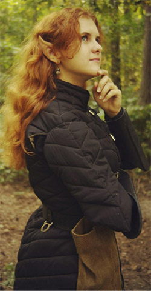

Личная страница Итиль
История Итиль
Итиль Рилинт’тар родилась в знатной семье города Мензоберранзана. Она получила свое дивное, не присущее дровскому обществу имя в час полной Луны. Мать Т’ерра это почувствовала, и далекие воспоминания о мире Поверхности захватили ее сознание. «Итиль…» – выдохнула она и провалилась в небытье так быстро, что не успела заметить негодующе-обозленного лица старшей дочери – верховной жрицы семейства. После она жалела о своем необдуманном поступке, но было слишком поздно. Богиня Ллос не любит подобные вещи, и она это прекрасно понимала.
Кроме Итиль у Матери Т’ерры была еще одна дочь, Микара, которая отдала свою долгую жизнь во служение темной богине и делала все возможное, чтоб остаться в милости Ллос. Рождение сестры радовало её сердце до тех пор, пока Верховная Мать не произнесла имя…
Последующие годы обучения проходили под крышей дома Рилинт’тар, и наставницей Итиль стала именно её сестра. Захваченная фанатическим желанием сделать из сестры истинную служительницу и таким образом укрепить свое положение, Микара в мельчайших деталях рассказывала ей о кровавом культе Ллос, законах дровского общества и мире Подземья, но эти рассказы не вызывали подобного восхищения у сестренки. Со временем они перешли к практическим занятим, где Итиль изучала основы магии, а также владение оружием. «Чтоб выжить, ты должна уметь все» –говорила сестра, время от времени подкрепляя свои слова ударами, и тогда в ее глазах вспыхивал огонь. Мать Т’ерра относилась к младшей дочери холодно и сдержанно, но за это Итиль была ей благодарна. Она часто сравнивала членов своей семьи и вскоре начала понимать, что сестра куда более злобная и уже давно желает повысить свое положение в семействе. Подобные мысли казались ей дикими, но тёмная эльфийка научилась доверять своей интуиции, а она как раз намекала о больших переменах в ближайшем времени.
В день совершеннолетия девушка проснулась взволнованная и напряжённая. Повсюду было тихо, поэтому она выскользнула в коридор и направилась прямо в покои Матери. Не застав ее на месте, Итиль решила обойти зал, разглядывая диковинные резные колонны и фигурки пауков. Неожиданно за одной из колонн возникла приоткрытая дверь, которой она раньше никогда не видела. Оттуда лилось мягкое зеленоватое свечение и слышались странные звуки. «Ты разгневала богиню. – услышала она, – Ещё тогда, дав ей имя. Ллос проявила огромное великодушие, не уничтожив тебя сразу после того похода на Поверхность, потому что ты подавала большие надежды. Но ты смогла утаить кое-что…» Послышались крики и звуки возни, Итиль распахнула дверь и увидела взбешённую сестру, а напротив – окровавленную Мать, прижимающую к груди потертый зеленый плащ. Всё бы ничего, но его владелец был не дроу, о чем гласили цвет и серебрянная фибула. «Убирайся! – зарычала Микара, – Теперь я здесь Верховная Мать!» При этом она вонзила ритуальный кинжал в грудь Т’ерры. Внезапно откуда-то изнаружи донесся взрыв, потом еще один, и из потолка начали осыпаться камни. Микара отшатнулась, и Итиль удалось подбежать к умирающей Матери. Она лишь протянула ей плащ, заглянула в полные слез глаза и со вздохом «Итиль…» отошла в мир иной.
Итиль плохо помнила, как выбралась из горящего дома, захватив с собой из оружия только легкий лук и кинжал. Не помнила она, как ей удалось пробраться через вражескую армию атакующего Дома, чьм заданием было уничтожить попавший в немилость Дом Рилинт’тар. Какие-то первобытные инстинкты гнали её вперед по тоннэлям Подземья, увлекая все дальше и дальше от дома, которого больше не существовало.
Очнулась Итиль на пятый день головокружительного бегства возле берега подземного озера. Она была слишком измождена многочасовым бегом и тем, что произошло, но всё-таки нашла в себе силы подползти к воде и напиться. Это придало ей сил, и взгляд тёмной эльфийки пал на скомканный плащ, покоившийся возле её оружия. Серебрянная фибула загадочно мерцала, отражая блики воды, и вдруг Итиль заметила небольшой ручей, впадавший в озеро. Подумав немного, она собрала свои вещи и двинулась вдоль берега. Часы блуждания в полумраке были изнурительными, но странное чувство подталкивало девушку вперед, будто подбадривая её. Она оставляла позади темную богиню своего народа, стремясь к чему-то новому и неведанному. Постепенно мрак начал рассеиваться, подуло холодным ветром и каменный свод подземелья резко оборвался, открывая взору эльфийки темно-синий глаз неба, где, как и тогда, много лет назад, светила полная Луна…
Эльфийка посмотрела на неё и вдруг поняла, что больше не боится. На душе стало тепло и спокойно, даже воспоминания о жестокой резне и погоне отступили перед лунным светом, который, как показалось Итиль, указывал ей дорогу куда-то в сторону горного хребта. Он грозно щетинился острыми скалами, но это не пугало девушку, наоборот - придавало ей уверенности. Она долго пробиралась темными узкими тропами, постоянно рискуя оступиться над пропастью, но Луна всегда освещала ей дорогу. Когда даже её врожденная дровская ловкость и выносливость начали подводить, а дрожь в ногах не позволяла сделать и пары шагов, подьем неожиданно закончился. Взору Итиль открылся вид на чудесную долину, где в нескольких местах поднимался дымок. Окончив крутой и опасный спуск, она увидела высокую фигуру, которая двигалась навстречу. «Добро пожаловать в королевство Вэльдрин!» - сказал воин-дров.
Они говорили всю дорогу, пока не дошли к поселению. Девушка поведала темному эльфу свою историю, и тот отвел её в чертоги Владыки. Она не переставала поражаться отличиям законов общины отступников от тех, которые действовали в её родном городе. После долгого разговора Владыка созвал совет, а через несколько дней ей сообщили о принятии в общину. И тогда Итиль поняла, что обретет здесь настоящий дом.